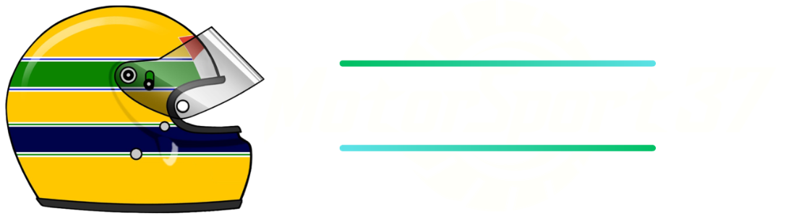

<!DOCTYPE html>
<html lang="en">
<head>
    <meta charset="UTF-8">
    <meta name="viewport" content="width=device-width, initial-scale=1.0">
    <title>Motorsport37 - Formula 1</title>
    <link rel="stylesheet" href="../CSS/reset.css">
    <link rel="stylesheet" href="../CSS/categoria.css">

</head>
</html>
<body>
    <header>
      
            <nav>
                <ul>
                    <li><a href="../index.html">Início</a></li>
                    <li><a href="formula1.html">Formula 1</a></li>
                    <li><a href="motogp.html">MotoGP</a></li>
                    <li><a href="wec.html">WEC</a></li>
                    <li><a href="indy.html">IndyCar</a></li>
                    <li><a href="wrc.html">WRC</a></li>
                    <li><a href="formulad.html">Formula Drift</a></li>
                    <li><a href="nascar.html">Nascar</a></li>
                    <li><a href="game.html">Game</a></li>
                    <li><a href="creditos.html">Créditos</a></li>
                </ul>
            </nav>
            
    </header>      

    <div class="conteudo">
        <header>
            <h1>Formula 1</h1>
        </header>
   </div>

     <div class="conteudo">
            <h2>Como funciona a Formula 1</h2>

            <p>A Fórmula 1 é o ápice do automobilismo mundial, caracterizada por carros monopostos altamente aerodinâmicos
               e tecnologicamente avançados. As corridas ocorrem em circuitos variados em todo o mundo, desde pistas urbanas
               até autódromos tradicionais. A competição atrai equipes renomadas, como McLaren, Ferrari, Mercedes e Red Bull, e os
               carros são impulsionados por motores V6 turbo-híbridos. As equipes competem por pontos ao longo da temporada,
               com destaque para o Campeonato Mundial de Pilotos e o Campeonato Mundial de Construtores.</p>

            

            <h2>Onde a Formula 1 corre</h2>
            <p>Conforme mencionado, a temporada inaugural da Fórmula 1 contou com sete etapas, realizadas de maio
               a setembro e predominantemente sediadas na Europa (com exceção das 500 Milhas de Indianápolis, nos
               Estados Unidos, da qual a maioria dos pilotos de F1 se ausentou).</p>

            <p>eventos europeus surgiram à medida que a F1 se desenvolvia, e nas décadas seguintes, houve
               aventuras na América do Sul, América do Norte, África, Ásia, Austrália e, mais recentemente, no Oriente Médio,
               colocando verdadeiramente o 'mundo' no campeonato mundial.</p>

            <p>Silverstone, Mônaco, Spa-Francorchamps e Monza são os quatro circuitos que ainda fazem parte do calendário da F1
               desde aquela primeira temporada, embora tenham ocorrido diversas mudanças baseadas em segurança e modificações no layout da pista desde então.</p>


        


            <h2>Quando a Formula 1 começou</h2>
            <p>A Fórmula 1 foi estabelecida como uma competição de campeonato mundial em 1950, com a primeira corrida realizada
               no Circuito de Silverstone - uma antiga estação da Royal Air Force - no Reino Unido, em 13 de maio daquele ano.</p>

            <p>Mais seis eventos foram realizados em uma temporada que viu o piloto da Alfa Romeo, Giuseppe 'Nino' Farina, tornar-se
               o primeiro campeão mundial do esporte, superando os companheiros de equipe Juan Manuel Fangio e Luigi Fagioli.</p>
                
            <p>Embora o automobilismo estivesse ocorrendo desde o final do século XIX, com eventos de Grand Prix surgindo e crescendo
               em popularidade nas décadas seguintes, 1950 marcou o início do campeonato oficial de F1 que perdura até os dias de hoje.</p>

               <video controls width="600" height="400">
                <source src="../VID/first race.mp4" type="video/mp4">
            </video>

            <h2>Como funcionam os carros de Formula 1?</h2>
            <p>Milhares de peças estão envolvidas na criação de alguns dos carros de corrida mais rápidos e avançados do planeta, abrangendo
               detalhadas carrocerias, elementos de suspensão, unidades de potência turbo-híbridas, caixas de câmbio de oito velocidades com
               troca de marchas por paddle shift, pneus de 18 polegadas e muito mais.</p>

            <p>Quando o motor o coloca em movimento, um carro de F1 essencialmente age como um avião virado de cabeça para baixo, com asas dianteiras
               e traseiras - e tudo o que está entre elas - pressionando o carro na pista e proporcionando níveis incríveis de aderência nas curvas.</p>  
               
            <p>Isso dito, as atuais regulamentações técnicas da F1 são baseadas em um conceito aerodinâmico de 'efeito solo', com vários túneis cuidadosamente
               projetados sob o assoalho sugando o carro para a superfície da pista para gerar ainda mais pressão aerodinâmica.</p>   

            <p>Isso, combinado com uma carroceria mais simples do que nos anos anteriores, significa menos 'ar sujo' - ou fluxo de ar perturbado - é criado,
               permitindo que os carros sigam mais de perto uns aos outros, abrindo oportunidades adicionais de ultrapassagem e acrescentando espetáculo à corrida.</p> 
               
               <video controls width="900" height="550">
                <source src="../VID/2014car.mp4" type="video/mp4">
            </video>

            <h2>Motor da Formula 1</h2>
            <p>Os carros de F1 são alimentados por motores V6 turbo, com 15.000 RPM, que incluem sistemas de recuperação de energia cinética e térmica.</p>

            <p>As unidades de potência da F1 hoje em dia incluem os seguintes elementos: o motor de combustão interna (ICE), unidade geradora de motor-térmico (MGU-H),
               unidade geradora de motor-cinética (MGU-K), turbocompressor, armazenamento de energia (ES), eletrônicos de controle (CE) e escapamento.</p>

            <p>Ao longo da temporada, um piloto pode usar no máximo três motores de combustão interna (ICE), unidades MGU-H, unidades MGU-K e turbocompressores,
               duas unidades de armazenamento de energia (ES) e eletrônicos de controle (CE), e oito de cada um dos quatro elementos que compõem um conjunto de sistemas
               de escapamento - caso contrário, penalidades no grid serão aplicadas.</p>

                

            <h2>Quantos pilotos e equipes competem na Formula 1?</h2>

            <p>Um total de 20 pilotos e 10 equipes compõem o grid atual da F1, com cada equipe colocando dois carros.</p>

            <p>Isso varia desde equipes que estão na F1 desde as décadas iniciais, como Ferrari e McLaren, até novatos relativos como a Haas,
               que entrou no esporte antes da temporada de 2016.</p>
            
            <p>No que diz respeito aos pilotos, a experiência varia desde os campeões mundiais Lewis Hamilton, Fernando Alonso e Max Verstappen
               até pilotos novatos como Oscar Piastri e Logan Sargeant. (temporada de 2023)</p>

               

            <h2>Quais são os pilotos de Formula 1 mais bem-sucedidos de todos os tempos?</h2>

            <p>Na lista de campeões mundiais de todos os tempos da F1, Hamilton compartilha o recorde geral de sete títulos com Michael Schumacher.
               Hamilton conquistou seu primeiro título com a McLaren em 2008, antes de adicionar mais seis na Mercedes entre 2014 e 2020, enquanto
               Schumacher venceu os campeonatos de 1994 e 1995 com a Benetton, adicionando mais cinco (em sequência) na Ferrari de 2000 a 2004.</p>

            <p>Até o momento, Hamilton também detém o recorde de mais vitórias em corridas, acumulando 103 até o momento, junto com o recorde de mais
               pole positions, alcançando também 104 até agora</p>

            <p>Outros pilotos com múltiplos campeonatos incluem Fangio, que conquistou cinco títulos na década de 1950, Alain Prost, que venceu quatro nas décadas
               de 1980 e 1990, e o recentemente aposentado Sebastian Vettel, que conquistou quatro campeonatos consecutivos de 2010 a 2013.</p>

            <p>Ayrton Senna foi um piloto que parecia destinado a alcançar esses números em sua lendária carreira na F1, mas um trágico acidente no Grande Prêmio de
               San Marino de 1994 o deixou com um total de três, ao lado de vários outros nomes famosos.</p>

            <p>Max Verstappen é o mais recente campeão da F1, vencendo os títulos de 2021 e 2022 com a Red Bull, enquanto busca conquistar o terceiro consecutivo em 2023.</p>

            
            

      </div>

      <footer>
         <p>&copy; 2023 MilenaNovka. Todos os direitos reservados.</p>
     </footer>

</body>